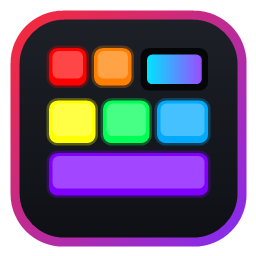
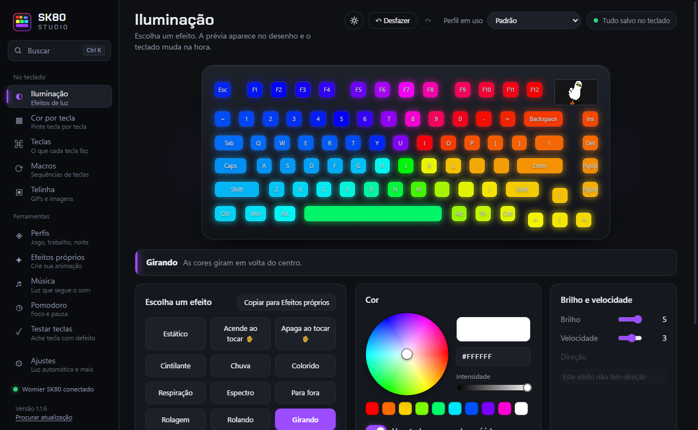
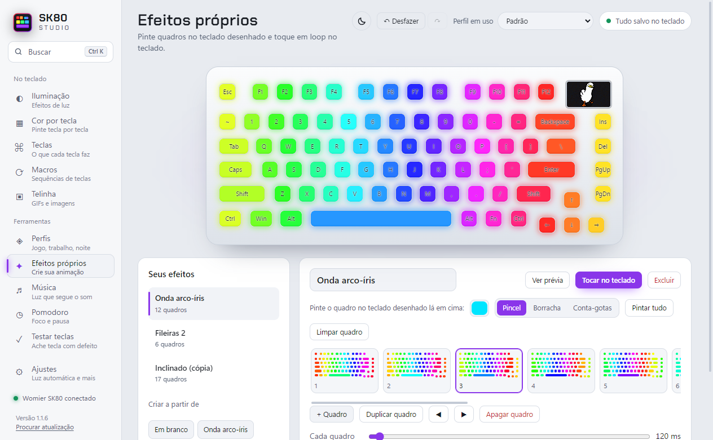

SK80 StudioLuz, cor por tecla, macros, a telinha e perfis num lugar só, bonito e fácil. Feito para substituir o driver oficial.
Baixar para WindowsPasse o mouse nas teclas.
Tudo é salvo sozinho no teclado. Não existe botão “Salvar”.


Leva menos de um minuto. Depois disso o app se atualiza sozinho.
Foi feito e testado com o Womier / XVX SK80 com telinha, ligado pelo cabo. Outros teclados não são reconhecidos.
O código é aberto: qualquer pessoa pode ler tudo no GitHub. O app não pede login, não coleta dados e só conversa com o teclado e com o GitHub para procurar atualização.
Não para as luzes, teclas e macros: tudo fica salvo no teclado. Música, efeitos próprios, Pomodoro e luzes de aviso precisam do app aberto ou escondido na bandeja.
Não. Perfis, macros e a biblioteca de GIFs ficam guardados no seu computador e continuam lá depois de cada atualização. E o backup diário guarda uma cópia de tudo, para você voltar a qualquer um dos últimos 14 dias.
Não. É um projeto pessoal e independente, sem ligação com a Womier ou a XVX.